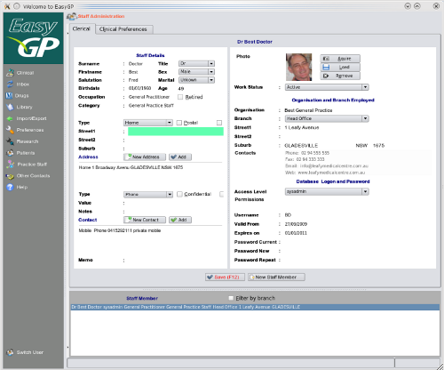

Practice Staff

The staff section is where you enter details of staff members. Note you must logon either as user 'easygp' or have sysadmin rights
to be able to access this section.
When you installed EasyGP you were prompted to enter the details of your practice which then became then
default Head Office. Should you have a number of branch offices in your organisation, you should enter those using
the 'Other Contacts' module which contains information about organisations (such as your own). These branches will then
be available within the staff module.
The staff module contains sections to allow you to
- Add and modify staff members, their names, addresses and contact numbers
- Add staff photograph
- Record place of work within your organisation
- Allocate a security access level, logon code and password
- Set up preferences for other sections of EasyGP (feature not implemented)